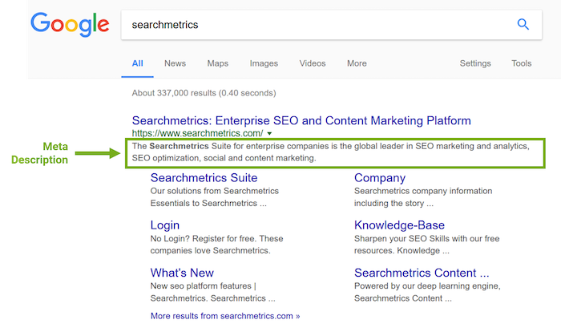
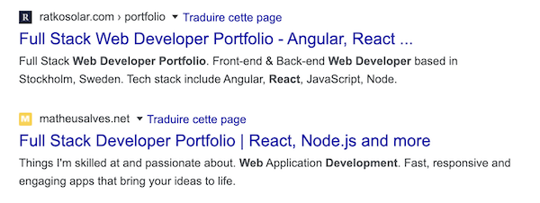

👩🏫 HTML - Chapitre 9 | Performance & Structure
Introduction
Lorsque tu codes une page web HTML/CSS, il est important de connaître les bonnes pratiques pour améliorer la performance de votre site web et avoir un bon SEO.
Dans cette quête, nous allons résumer quelques bonnes pratiques à suivre.
🤓 À la fin de cette quête, tu comprendras :
- ✅ Qu'est ce que la minification d'un fichier
- ✅ Comment minifier tes fichiers
- ✅ Comment rapidement compresser et redimensionner tes images
- ✅ Plusieurs Bonnes pratiques pour améliorer ton SEO
- ✅ Comment Évaluer la performance de ton site web
🔽 La minification de fichier
Une façon d'améliorer la performance de ton site web est la compression et la minification des fichiers .
Definition
La minification consiste à supprimer les données répétitives et non nécessaires sans affecter la façon dont la ressource est interprétée par le navigateur.
C'est possible par exemple en supprimant le code commenté, les retours à la ligne, les espaces et en renommant les variables par des noms plus petits.
Tout ceci permettra de rendre le poids de nos fichiers plus légers
Par exemple :
Ci-dessous, la page HTML sans minification:
<!DOCTYPE html>
<html lang="en">
<head>
<meta charset="UTF-8" />
<meta name="viewport" content="width=device-width, initial-scale=1.0" />
<meta http-equiv="X-UA-Compatible" content="ie=edge" />
<title>Hello World</title>
</head>
<body>
<h1>Hello, World</h1>
</body>
</html>
La même page minifiée:
<!doctypehtml><html lang=en><meta charset=UTF-8><meta content="width=device-width,initial-scale=1"name=viewport>
<meta content="ie=edge"http-equiv=X-UA-Compatible><title>Hello World</title><h1>Hello, World</h1>
Comme tu peux le voir Tout notre code est sur une seule ligne.
Dans cet exemple, nous minifions un fichier très petit, mais imagine le résultat si c'était un très gros fichier !
Comment minifier nos fichiers ?
Tu peux utiliser cet outil : https://kangax.github.io/html-minifier/
Ou bien, tu peux installer ce plugin pour Visual Studio : https://marketplace.visualstudio.com/items?itemName=HookyQR.minify
Sinon, tu peux utiliser Parcel ou Webpack Encore, que tu aborderas peut-être plus tard dans ta formation.
🗜️La compression d'images
L'une des choses les plus importantes quand tu souhaites optimiser la rapidité de ton site web est de compresser tes images.
Les images sont souvent la cause de mauvaises performances. Par exemple, si tu utilises une très grande photo et que tu la redimensionnes directement dans ton site web, le navigateur va charger l'image à sa taille complète avant de la redimensionner. C'est une mauvaise pratique ! La chose la plus importante à faire est de redimensionner les images à la taille maximum souhaitée pour ton site web !
Comment redimensionner une image ?
Mac:
Windows:
Linux:
🗜️ Comment compresser une image ?
Redimensionner tes images n'est pas le seul moyen d'améliorer la performance de ton site web. Tu peux également compresser tes images en utilisant un service tel que tinypng. Il suffit simplement de faire glisser tes images et elles seront automatiquement compressées.
Évalue la performance de ton site web
Pour évaluer la performance de ton site web, tu peux utiliser des outils tel que Gtmetrix ou bien tu peux utiliser web.dev ou enfin, simplement utiliser les fonctionnalités d'audit intégrées dans les utilitaires de développement de Chrome.
# Outils pour développeurs webs
Il est important de prêter une attention particulière à la performance de ton site web, des utilisateurs pourraient par exemple consulter ton site dans un train avec une connexion faible, alors que nous ne souhaitons pas que ces utilisateurs quittent notre site web.
🔭 SEO
Si tu souhaites que ton contenu soit facilement trouvable sur les moteurs de recherche, tu dois suivre quelques bonnes pratiques.
Le SEO est un sujet très vaste, il y a beaucoup à savoir quand tu souhaites améliorer la visibilité de ton site web. Cependant, Il existe des moyens simples, en appliquant des bonnes pratiques dans ton code HTML, d'améliorer le SEO.
Mon site est-il sur Google ?
Si tu souhaites savoir si ton site web est sur google, il suffit simplement de rechercher ton url dans google, si tu vois ton site dans les résultats : Parfait, ton site est bien référencé par google !
La balise title
Tu dois toujours prendre soin de bien remplir la balise title de ta page html.
Ne laisse jamais de titre par défaut tel que "Sans titre", "Untitled" ou "Page 1".
Fais bien attention à écrire un titre clair Une bonne pratique consiste à placer des mots clés dans les titres de tes pages, de cette façon :
Mot clé principal - Mot clé secondaire | Nom du site
Ex:
Développeur web fullstack - JavaScript React Bordeaux | Bob Doe
Le titre ne doit pas dépasser 55 caractères.
Meta Description
La balise meta description est très importantes pour le SEO. Elles est utilisée par google pour afficher des informations dans leur page de résultats.

Source:https://www.searchmetrics.com/glossary/meta-description/La bonne pratique pour la balise meta description est d'y ajouter un contenu entre 150 et 160 characters. Tu peux y placer des mots clés en rapport avec le sujet de ton site web.
<meta name="description" content="Full Stack Web Developer Portfolio. Front-end & Back-end Web Developer based
in Berlin, Germany. Tech stack include React, JavaScript, Node, SQL.">

Insère des mots clés dans ton contenu
Le contenu de ton site web doit avoir un grand nombre de mots clés en rapport avec le sujet dont tu parles.
Aussi, il est très important que le contenu soit unique et ne soit pas répété dans différentes pages de ton site web.
Google vérifie que ton contenu est bien unique. C'est pour cette raison qu'il faut éviter de copier/coller du contenu depuis des articles de presse ou d'autres médias.
Utilise les bonnes balises
Prends soin de bien respecter la sémantique HTML, ton HTML doit aider le robot de google à comprendre la structure de ton site web.
Il est également important d'utiliser les titres (h1, h2, h3) de la bonne manière.
H1 est un grand titre, H2 un sous-titre, H3 un sous-sous-titre, et ainsi de suite.
Évite d'utiliser un h2 sans la présence d'un h1. Si tu souhaites diminuer la taille de la police, utilise une autre balise ou modifie la taille de ton h1 mais n'utilise pas de h2 sans h1.
Utilise du texte cohérent pour tes liens
Le texte de tes liens doit être clair, les robots vont visiter tes liens et vérifier le texte qui a été cliqué donc comme d'habitude, prends bien soin d'utiliser les bons mots clés.
C'est plus judicieux d'utiliser du texte tel que "Accéder à mon portfolio de développeur web" plutôt que "Cliquer ici pour accéder à mon portfolio de développeur web".
Également il est possible d'ajouter l'attribut nofollow à vos liens pour indiquer que cette page ne doit pas être visitée par les robots de google.
Si par exemple, tu penses qu'une page n'est pas pertinente ou que le lien ne pointe pas vers une page de ton site web, tu peux utiliser l'attribut nofollow pour t'assurer que le robot ne tienne pas compte de ce lien.
<a href="https://cheese.example.com/Appenzeller_cheese" rel="nofollow">Portfolio</a> cheese.
N'oublie pas alt dans tes images
N'oublie pas les attributs alt dans tes images, ils sont aussi utilisés par le robot de google. Et comme toujours, n'oublie pas d'utiliser des mots clés dans le alt. Également, n'oublie pas de donner un nom significatif pour tes images. Toutes ces recommandations te permettront aussi d'avoir une structure plus adaptée pour l'accessibilité et en particulier pour les personnes déficientes visuelles qui utilisent des navigateurs spécialisés.
📚 Ressources
☝️ En résumé
- C'est important de prêter une attention particulière à la performance de ton site web car un grand nombre de personnes pourraient visiter ton site web depuis leur smartphone.
- Il est conseillé de toujours minifier tes fichiers HTML, CSS et Javascript
- Il faut redimensionner et compresser tes images
- Évalue régulièrement la performance de ton site web en utilisant Gtmetrix ou Lighthouse dans google chrome
Ressources partagées sur cette quête
- Plugin Chrome utile pour voir si l'arborescence des titres d'un site/app est respectée et comment elle est lue par les outils favorisant l'accessibilitéhttps://chrome.google.com/webstore/detail/headingsmap/flbjommegcjonpdmenkdiocclhjacmbi
- Ce site permet de visualiser l'affichage sur une page de résultat tout en ayant un compteur en pixel pour le titre et la métadescription. Je précise juste qu'il compte de manière assez large pour la métadescription, mieux vaut réduire un peu par rapport au maximum qu'il affiche la méta complète.https://serpsim.com/
- Cette extension disponible pour Chrome, Firefox et Edge permet d'évaluer ta page web en terme d'accessibilité, cela directement dans le navigateur.https://wave.webaim.org/extension/